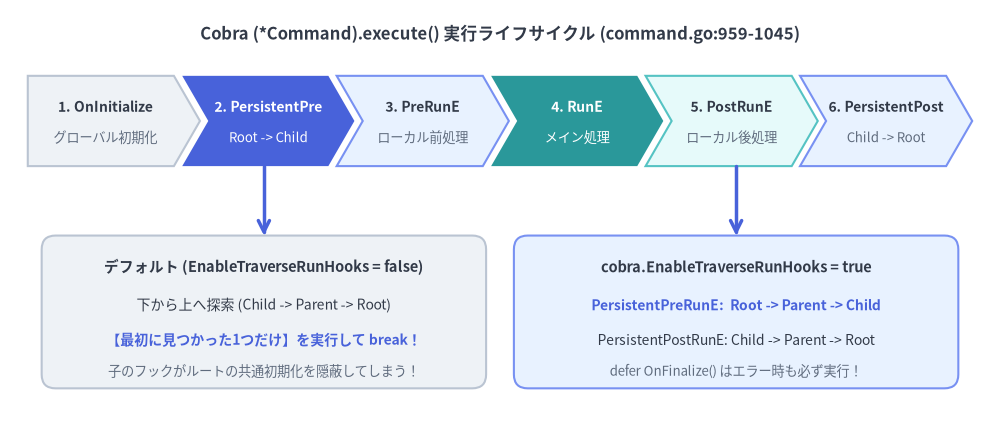
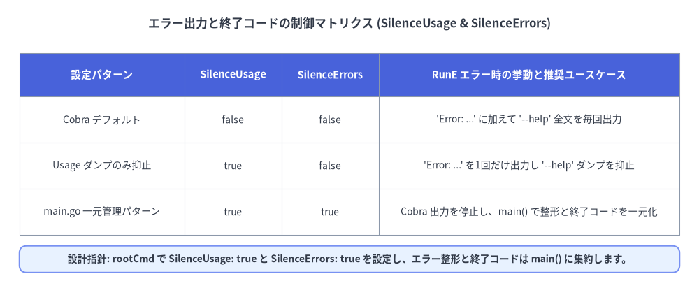

6段階フック・エラー設計・Context シグナル
エンタープライズ品質の CLI を構築するには、(*Command).execute()（command.go:905-1045）における正確な実行順序の把握が不可欠です。この仕組みを理解していないと、「サブコマンドに PersistentPreRunE を追加した途端にルートコマンドの認証・Viper 初期化がスキップされる」「実行時の API エラーなのに 40 行の --help が出力され、エラー文字列が2回重複表示される」「Ctrl+C（SIGINT）押下時にリモート処理が中断されない」といった典型的な障害が発生します。

Source Code
from drawlib.canvas import save, setup
from drawlib.lines import line
from drawlib.shapes import rectangle
from drawlib.smartarts import ChevronProcess
from drawlib.styles import Styles
from drawlib.text import text
setup(width=144, height=62)
text(
(72, 57),
"Cobra (*Command).execute() 実行ライフサイクル (command.go:959-1045)",
style=Styles.DarkBold.patch(text_size=12.0),
)
stages = ChevronProcess(
style=Styles.Neutral,
text_style=Styles.DarkBold.patch(text_size=10.0),
description_style=Styles.Muted.patch(text_size=9.5),
corner_angle=60.0,
spacing=1.2,
flat_left_end=True,
)
stages.add("1. OnInitialize", description="グローバル初期化")
stages.add(
"2. PersistentPre",
description="Root -> Child",
style=Styles.PrimaryFlat,
text_style=Styles.WhiteBold.patch(text_size=10.0),
description_style=Styles.White.patch(text_size=9.5),
)
stages.add("3. PreRunE", description="ローカル前処理", style=Styles.PrimaryNeutral)
stages.add(
"4. RunE",
description="メイン処理",
style=Styles.SecondaryFlat,
text_style=Styles.WhiteBold.patch(text_size=10.0),
description_style=Styles.White.patch(text_size=9.5),
)
stages.add("5. PostRunE", description="ローカル後処理", style=Styles.SecondaryNeutral)
stages.add("6. PersistentPost", description="Child -> Root", style=Styles.PrimaryNeutral)
stages.draw(xy=(4, 38), width=136, height=13)
# Bottom comparison: Default vs EnableTraverseRunHooks = true
rectangle((38, 17), width=64, height=22, style=Styles.Neutral.patch(shape_r=2.0))
text((38, 23.5), "デフォルト (EnableTraverseRunHooks = false)", style=Styles.DarkBold.patch(text_size=10.5))
text((38, 18.0), "下から上へ探索 (Child -> Parent -> Root)", style=Styles.Dark.patch(text_size=10.0))
text((38, 13.0), "【最初に見つかった1つだけ】を実行して break！", style=Styles.PrimaryBold.patch(text_size=10.0))
text((38, 8.5), "子のフックがルートの共通初期化を隠蔽してしまう！", style=Styles.Muted.patch(text_size=9.5))
rectangle((106, 17), width=64, height=22, style=Styles.PrimaryNeutral.patch(shape_r=2.0))
text((106, 23.5), "cobra.EnableTraverseRunHooks = true", style=Styles.DarkBold.patch(text_size=10.5))
text((106, 18.0), "PersistentPreRunE: Root -> Parent -> Child", style=Styles.PrimaryBold.patch(text_size=10.0))
text((106, 13.0), "PersistentPostRunE: Child -> Parent -> Root", style=Styles.Dark.patch(text_size=10.0))
text((106, 8.5), "defer OnFinalize() はエラー時も必ず実行！", style=Styles.Muted.patch(text_size=9.5))
line((38, 38), (38, 28), arrow_head="->", style=Styles.PrimaryBold)
line((106, 38), (106, 28), arrow_head="->", style=Styles.PrimaryBold)
save()
1. (*Command).execute() の厳密な実行順序（command.go）
ExecuteC() が実行対象の末端サブコマンド cmd を特定し、c.ParseFlags(a) でフラグ解析を終えると、cmd.execute(flags) の中で以下の9ステップが厳密な順序で実行されます。
| 順序 | 実行されるメソッド / フック | command.go 行番号 |
エラー発生時・短絡評価の挙動 |
|---|---|---|---|
| 1 | c.preRun()（cobra.OnInitialize 登録関数） |
959 行目 |
ValidateArgs の前に実行。直後の 961 行目で defer c.postRun()（OnFinalize）が登録される。 |
| 2 | c.ValidateArgs(argWoFlags)（cmd.Args） |
968 行目 |
位置引数エラー時は即座に return し、以降の *Run* フックは一切実行されない。 |
| 3 | PersistentPreRunE / PersistentPreRun |
972–998 行目 |
最も近い親の1つ（または EnableTraverseRunHooks == true 時は Root -> Child 全階層）を実行。 |
| 4 | PreRunE / PreRun |
999–1005 行目 |
対象コマンド固有の前処理を実行。エラー時はフラググループ検証前に中断。 |
| 5 | ValidateRequiredFlags() & ValidateFlagGroups() |
1007–1012 行目 |
RunE の直前で MarkFlagRequired および flag_groups.go の制約を検証。 |
| 6 | RunE / Run |
1014–1020 行目 |
コマンドのメインロジックを実行。 |
| 7 | PostRunE / PostRun |
1021–1027 行目 |
RunE が nil（成功）を返した場合のみ実行。 |
| 8 | PersistentPostRunE / PersistentPostRun |
1028–1042 行目 |
RunE と PostRunE が成功した場合のみ実行（Child -> Root 順）。 |
| 9 | defer c.postRun()（cobra.OnFinalize 登録関数） |
961 行目 |
ステップ 1 に到達していれば、RunE 等がエラーを返した場合でも defer により必ず実行される。 |
cobra.EnableTraverseRunHooks = true による親フックの連鎖実行
デフォルト（EnableTraverseRunHooks = false）では、Cobra は実行対象のサブコマンドから親方向（c -> Parent -> Root）へ遡り、最初に見つかった非 nil の PersistentPreRunE を1つ実行した時点で break します（command.go:989）。そのため、ルートコマンドの PersistentPreRunE でロガーや Viper を初期化していても、サブコマンド側で独自の PersistentPreRunE を定義した瞬間にルートの処理がスキップされてしまいます。
多階層 CLI では、必ず cobra.EnableTraverseRunHooks = true を設定し、親から子へミドルウェアのように連鎖実行させてください。
func init() {
// PersistentPreRunE を上から下 (Root -> Parent -> Child)、
// PersistentPostRunE を下から上 (Child -> Parent -> Root) の順で全階層実行する
cobra.EnableTraverseRunHooks = true
}
2. エラー二重出力の防止：SilenceUsage・SilenceErrors と終了コード設計
デフォルト設定のまま RunE がエラーを返すと、それがコマンド構文ミスではなく「API サーバーの 503 エラー」や「DB 接続タイムアウト」であっても、Cobra は ExecuteC()（command.go:1149-1160）の中で次の2つを自動出力します。
Error: <err.Error()>を標準エラー出力に表示する（SilenceErrors: falseの場合）。- コマンドの長い
--helpUsage 全文を標準エラー出力にダンプする（SilenceUsage: falseの場合）。
さらに main() 側でも if err != nil { fmt.Fprintln(os.Stderr, err) } を書いていると、同じエラーメッセージが --help 全文を挟んで2回表示されることになります。

Source Code
from drawlib.canvas import save, setup
from drawlib.shapes import rectangle
from drawlib.smartarts import Table
from drawlib.styles import Styles
from drawlib.text import text
setup(width=144, height=58)
text(
(72, 53),
"エラー出力と終了コードの制御マトリクス (SilenceUsage & SilenceErrors)",
style=Styles.DarkBold.patch(text_size=12.0),
)
tbl = Table(
cell_style=Styles.White,
text_style=Styles.Dark.patch(text_size=10.0),
header_cell_style=Styles.PrimaryFlat,
header_text_style=Styles.WhiteBold.patch(text_size=10.5),
border_style=Styles.MutedThin,
)
rows = [
["設定パターン", "SilenceUsage", "SilenceErrors", "RunE エラー時の挙動と推奨ユースケース"],
[
"Cobra デフォルト",
"false",
"false",
"'Error: ...' に加えて '--help' 全文を毎回出力",
],
[
"Usage ダンプのみ抑止",
"true",
"false",
"'Error: ...' を1回だけ出力し '--help' ダンプを抑止",
],
[
"main.go 一元管理パターン",
"true",
"true",
"Cobra 出力を停止し、main() で整形と終了コードを一元化",
],
]
tbl.draw_flexible(
xy=(4, 47),
column_widths=[34, 20, 20, 62],
row_heights=[9, 9.5, 9.5, 9.5],
data=rows,
align="top_left",
)
rectangle((72, 4.5), width=136, height=5.5, style=Styles.PrimaryNeutral.patch(shape_r=1.5))
text(
(72, 4.5),
"設計指針: rootCmd で SilenceUsage: true と SilenceErrors: true を設定し、エラー整形と終了コードは main() に集約します。",
style=Styles.DarkBold.patch(text_size=10.0),
)
save()
3. ExecuteContext と signal.NotifyContext による優雅なシグナル中断
すべての cobra.Command は内部に context.Context を保持しており、cmd.Context() で取得できます。エントリーポイント（main.go）で signal.NotifyContext を使って os.Interrupt（SIGINT / Ctrl+C）と syscall.SIGTERM をバインドし、rootCmd.ExecuteContext(ctx) で実行することで、通信中の HTTP リクエストや gRPC ストリーム、子プロセスを安全にキャンセルできます。
package main
import (
"context"
"errors"
"fmt"
"os"
"os/signal"
"syscall"
"github.com/spf13/cobra"
)
// ExitError は任意のプロセス終了コードを伴う構造化エラー型です。
type ExitError struct {
Code int
Err error
}
func (e *ExitError) Error() string { return e.Err.Error() }
func (e *ExitError) Unwrap() error { return e.Err }
func main() {
os.Exit(run())
}
func run() int {
// 1. OS シグナル (SIGINT / SIGTERM) を Context のキャンセルにバインド
ctx, stop := signal.NotifyContext(context.Background(), os.Interrupt, syscall.SIGTERM)
defer stop()
rootCmd := NewRootCommand()
// 2. シグナル連動済みの Context を渡してコマンドツリーを実行
if err := rootCmd.ExecuteContext(ctx); err != nil {
if errors.Is(err, context.Canceled) {
fmt.Fprintln(os.Stderr, "\nOperation canceled by signal (SIGINT/SIGTERM)")
return 130 // POSIX 標準の SIGINT 終了コード (128 + 2)
}
var exitErr *ExitError
if errors.As(err, &exitErr) {
fmt.Fprintf(os.Stderr, "Error: %v\n", exitErr.Err)
return exitErr.Code
}
fmt.Fprintf(os.Stderr, "Error: %v\n", err)
return 1
}
return 0
}
func NewRootCommand() *cobra.Command {
cobra.EnableTraverseRunHooks = true
cmd := &cobra.Command{
Use: "mycli",
Short: "Context シグナル連動を備えた本番向け CLI",
SilenceUsage: true, // 実行時エラーで --help をダンプしない
SilenceErrors: true, // エラー出力と終了コード制御を run() に一元化する
RunE: func(cmd *cobra.Command, args []string) error {
// 任意のフックや RunE 内で cmd.Context() からシグナル連動 Context を取得
ctx := cmd.Context()
select {
case <-ctx.Done():
return ctx.Err()
default:
cmd.Println("Executing workload with context...")
return nil
}
},
}
return cmd
}